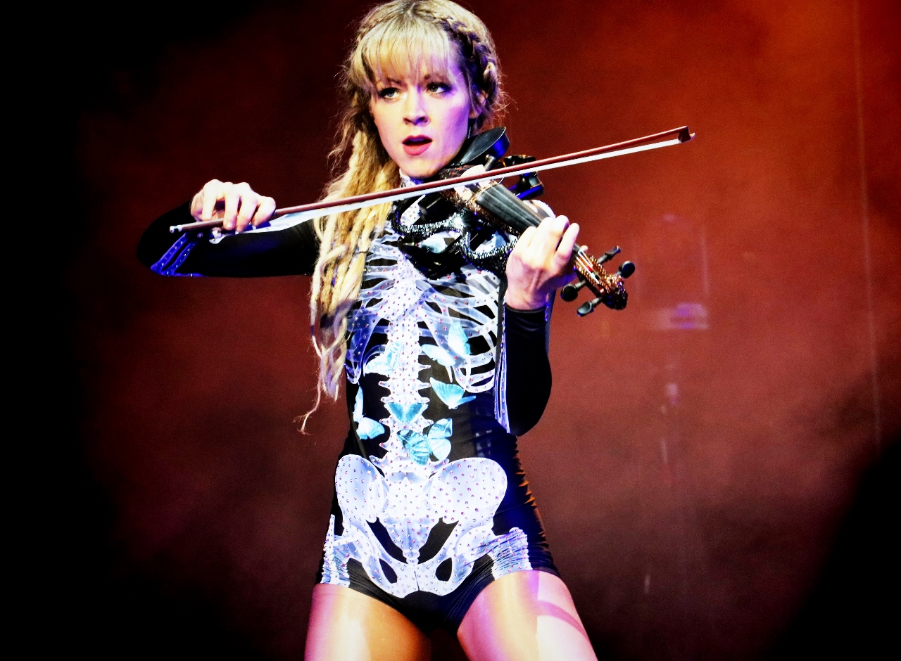
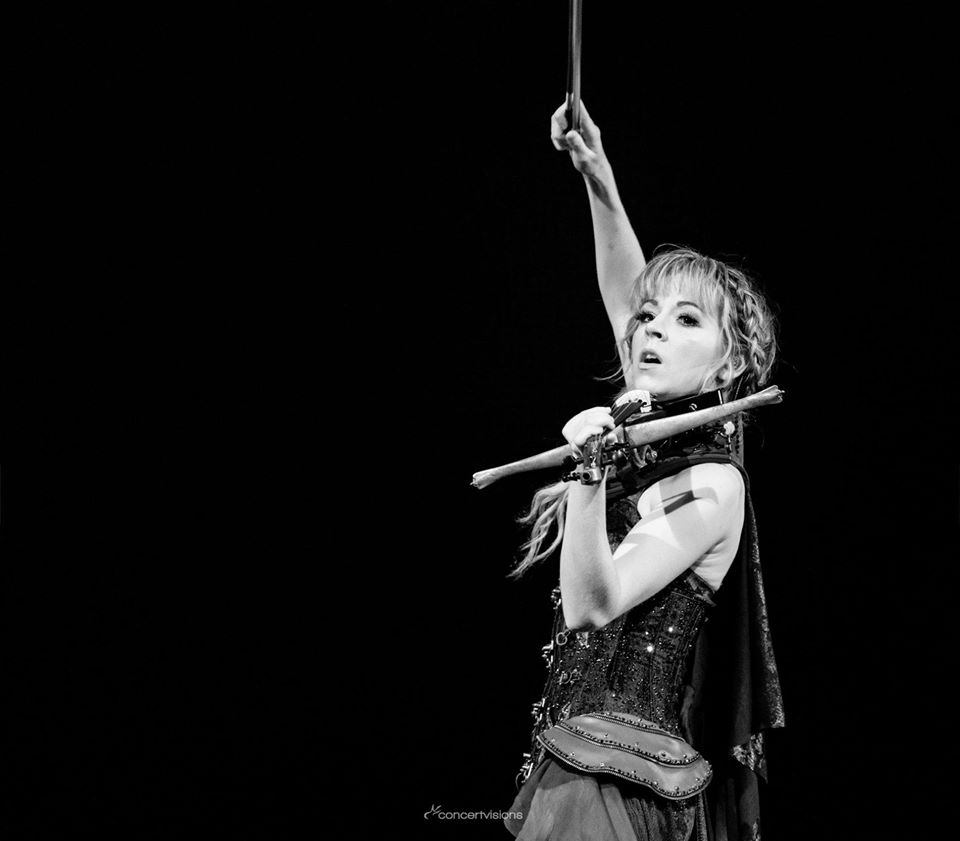
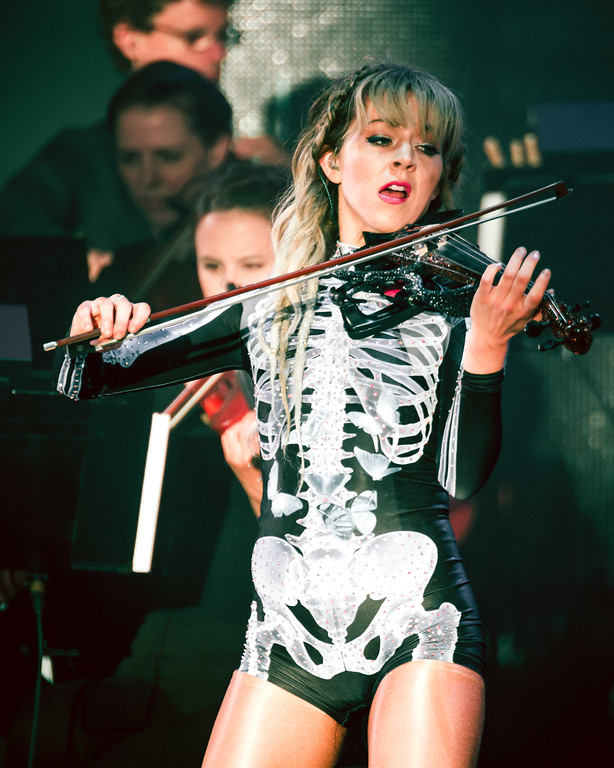

Lindsey Stirling es una violinista, bailarina, artista de performance, y compositora estadounidense. Presenta actuaciones de violín coreografiadas, tanto en directo como en vídeos musicales que se encuentran en su canal oficial de YouTube, que creó en 2007.
Interpreta una variedad de estilos musicales, de la música clásica al pop y del rock a la música electrónica. Ha grabado cinco discos. (Para mayor información click en la imagen)
En la actualidad su canal de youtube cuenta con más de 13 millones de suscriptores y acumula mas de 3 mil millones de visualizaciones en sus 170 videos. (Para visitar su canal de Youtube click en la imagen)
En su instagram cuenta con mas de 2 millones de seguidores y es muy activa en su cuenta. (Para visitar su instagram click en la imagen)
